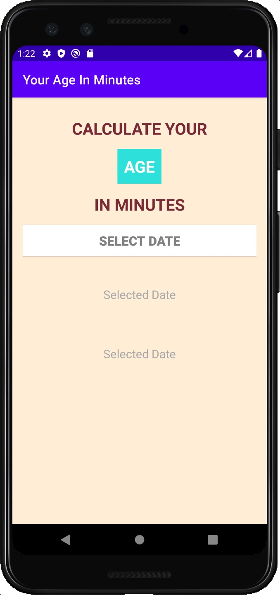
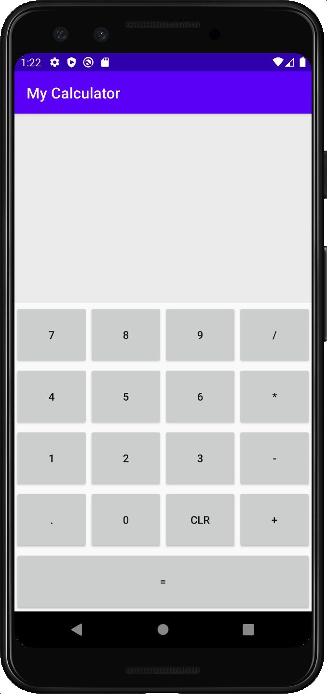

今日完成了兩個 App:
- Age In Minutes: 學習 XML 的 layout 處理、
DatePicker應用 - Calculator: 學習 String 基本處理、利用
view來取得 event target 的內容
Age In Minutes
之前沒見過的如gravity, oritentation (類似 flexbox 的 direction), 此外還有layout_gravity, 兩著的差異主要為 gravity 對應當前 view box，而layout_gravity則對應父 view 的位置
1 | <LinearLayout xmlns:android="http://schemas.android.com/apk/res/android" |
此外還學到很好用的 DatePickerDialog，內建好的可操作日曆，搭配SimpleDateFormat可將 String 轉成我們想要的格式並用於計算。十分方便
程式碼如下
1 | DatePickerDialog( |
Calculator App
此處主要介紹 Linear Layout 的排版應用、如何透過 view 傳 event target 資訊、及字串處理的語法。其中程式邏輯上略有瑕疵，供參考。
學到的新語法大致如下：
text.append(): 實現連續輸入的效果string.startsWith()： 判斷是否有數字為負值string.contains()： 判斷運算元與執行相應操作
心得題外話
今天開始將陣地轉移至 Lab，希望在同儕的刺激下加速成長。與裕隆、品裕、振弘比較深入的聊天，感受到比之前更高的夢想，自己也不可以輸呢。
明天目標： Sec 8, Sec 9